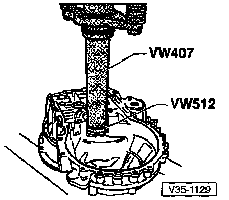
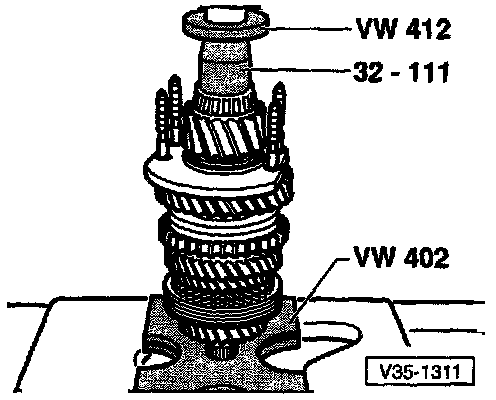
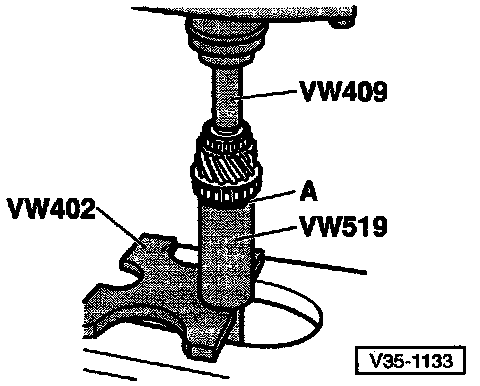
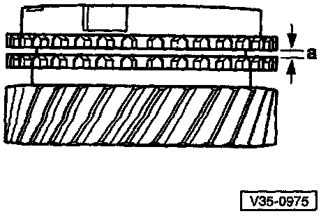
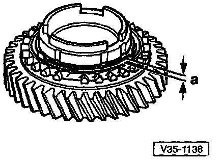
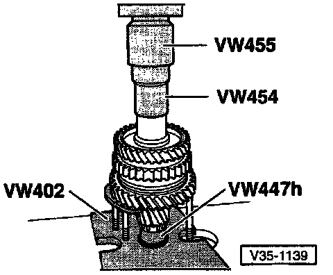
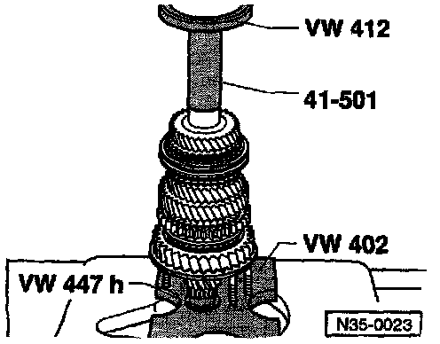

Output Shaft: Service and Repair

1 - Hex nut -- quantity: 4
^ Tightening torque for bearing support (9): 25 Nm (18 ft lb), plus additional 90° (1/4-turn)
2 - Clutch housing
3 - Shim
4 - Small tapered roller bearing outer race
^ Bearing must be replaced as a set with large tapered roller bearing (7)
5 - Small tapered roller bearing inner race
6 - Output shaft
^ Paired with final drive gear (differential ring gear); always replace as a set
7 - Large tapered roller bearing inner race
^ Bearing must be replaced as a set with small tapered roller bearing (4)
8 - Sealing rings -- quantity: 4
^ Install on bolts for bearing support (9)
9 - Bearing support -- with large tapered roller bearing outer race and bolts
^ Only replace outer race together with large tapered roller bearing and bearing support
10 - Thrust washer
^ Shoulder on thrust washer faces tapered roller bearing
11 - 1st gear
12 - Needle roller bearing for 1st gear
13 - 1st gear synchronizer ring (synchro-ring)
14 - 1st/2nd gear operating sleeve with synchronizer hub (synchro-hub)
15 - Circlip
16 - 2nd gear synchronizer ring (synchro-ring)
17 - 2nd gear synchronizer outer ring
18 - 2nd gear synchronizer inner ring
19 - 2nd gear
20 - Needle roller bearing for 2nd gear
21 - Thrust Washer
22 - Sleeve for 3rd gear (3GR) needle roller bearing
23 - Needle roller bearing for 3rd gear (3GR)
24 - 3rd gear (3GR)
25 - 3rd gear (3GR) synchronizer ring (synchro-ring)
26 - Operating sleeve with synchronizer hub (synchro-hub)
^ For 3rd gear (3GR) and 4th gear (4GR)
^ Press off with 2nd gear and 3rd gear
27 - Sleeve for needle roller bearing
28 - Needle roller bearing for 4th gear (4GR)
29 - 4th gear (4GR) synchronizer ring (synchro-ring)
30 - 4th gear (4GR)
31 - Thrust washer
32 - Needle roller bearing for output shaft
33 - Transmission housing
34 - Sleeve for output shaft needle roller bearing
35 - 5th gear
36 - Belleville spring washer
37 - Torx(r) socket-head bolt M10
^ Tightening torque: 8O Nm (59 ft lb)
Pressing Apart Output Shaft For Disassembly

- Position separate device under 2nd gear (19) and press off, which includes:
^ 3rd gear (3GR)
^ 4th gear (4GR) synchro-hub with operating sleeve
^ 2nd gear
^ 3rd gear (3GR)
^ 4th gear (4GR) with transmission housing needle roller bearing sleeve
A = Separator, 22-115 mm e.g. Kukko 17/2
B = 17 mm hex-head bolt (M10 x 20)
NOTE: Support the separator tool so that the lst/2nd gear operating sleeve stays in position and is NOT pulled off.
COMPONENT DISASSEMBLY-IDENTIFICATION-INSPECTION PROCEDURES
NOTE: The numbers in (parentheses) below, refer to the component key for the exploded image above. The components which require additional disassembly are listed below with a following procedure. The procedures are listed in the order the components are listed, and are not intended to be a sequential disassembly/assembly procedure.
(4) Small tapered roller bearing outer race
- Bearing must be replaced as a set with large tapered roller bearing (7)

Removing Small Tapered Roller Bearing Outer Race
- A - Internal extractor: 37-46 mm e.g. US 1099 or Kukko 21/6
- B - Counter support e.g. US 1032 or Kukko 22/2

Installing Small Tapered Roller Bearing Outer Race
(5) Small tapered roller bearing inner race

Removing Small Tapered Roller Bearing Outer Race
- A = Protective jaws for vise
- Install puller and tighten into position well behind rollers of bearing
- Turn bearing and re-tighten puller

Installing Small Tapered Roller Bearing Outer Race
(7) Large tapered roller bearing inner race
- Bearing must be replaced as a set with small tapered roller bearing (4)

Pulling Off Large Tapered Roller Bearing Inner Race
- A - Protective jaws for vise
- Before installing the puller, insert a M10 x 20 hex bolt in threaded hole of The output shaft

Installing Large Tapered Roller Bearing Inner Race
- A = Thrust washer
- Install thrust washer before pressing on inner race
Shoulder faces inner race
(13) 1st gear synchronizer ring (synchro-ring)

Checking Synchro-Ring For Wear
- Gap a = New: 1.0-1.7 mm (0.039-0.067 in)
Wear limit: 0.5 mm (0.020 in)

Identifying 1st vs 2nd Gear Synchro-Ring By Teeth
- 1st gear synchro-ring has 3 ground-down half teeth (arrow)
- 2nd gear synchro-ring has 2 or 3 ground-down half teeth (arrow)

Identifying 1st vs 2nd Gear Synchro-Ring By Recesses
- 1st gear synchro-ring; no recesses
- 2nd gear synchro-ring; three recesses (arrows)
(14) 1st/2nd gear operating sleeve with synchronizer hub (synchro-hub)

Removing 1st/2nd Gear Operating Sleeve With Synchro-hub
- Remove circlip (15)
- Pull off operating sleeve/synchro-hub assembly using bearing support
- A = Separator, 22-115 mm e.g. Kukko 17/2
- B = 17 mm hex-head bolt (M10 x 20)
- Support the separator tool so that the lst/2nd gear operating sleeve stays in position and is NOT pulled off

Disassembling And Assembling 1st/2nd Gear Operating Sleeve And Synchro-hub
- 1 Spring
- 2 Operating sleeve
- 3 Synchro-hub
- 4 Locking piece
- Press operating sleeve over synchro-hub
- After assembly, wider shoulder of synchro-hub (arrow A) and outer splines of operating sleeve (arrow B) face in opposite directions
- Recesses for locking pieces, in synchro-hub and in operating sleeve, must be aligned

Assembled View Of 1st/2nd Gear Operating Sleeve And Synchro-hub
- Operating sleeve pressed over synchro-hub
- Insert locking pieces and install springs
- Spring ends must be offset by 120°
- Bent end of spring must engage in locking piece

Installation Position Of 1st/2nd Gear Operating Sleeve/synchro-hub
- Splines on operating sleeve (arrow 1) face toward splines for 3rd gear (3GR) and 4th gear (4GR) synchro-hub (A)
- Wide shoulder of synchro-hub (arrow 2) faces toward 1st gear (B)

Pressing On 1st/2nd Gear Synchro-hub With Operating Sleeve
- Before pressing on, place 1st gear synchro-ring onto 1st gear
(16) - 2nd gear synchronizer ring (synchro-ring)
Identifying 2nd vs 1st Gear Synchro-Ring By Teeth
- 1st gear synchro-ring has 3 ground-down half teeth (arrow)
- 2nd gear synchro-ring has 2 or 3 ground-down half teeth (arrow)
Identifying 2nd vs 1st Gear Synchro-Ring By Recesses
- 1st gear synchro-ring; no recesses
- 2nd gear synchro-ring; three recesses (arrows)

Checking 2nd Gear Synchro-Ring For Wear
- Gap a = New: 1.2-1.8 mm (0.047-0.071 in)
Wear limit: 0.5 mm (0.020 in)
(17) 2nd gear synchronizer outer ring
Installation Position Of 2nd Gear Synchronier Outer Ring
- Engage in 2nd gear synchro-ring (16)
- Replace if scored
(18) 2nd gear synchronizer inner ring

Checking 2nd Gear Synchronizer Inner Ring For Wear
- Press synchro-ring, outer ring and inner ring onto cone of 2nd gear
- Measure gap a with feeler gauge
- Gap a = New: 0.75-1.25 mm (0.030-0.0490
Wear Limit: 0.3 mm (0.012 in)
- Check lugs for scoring

Installation Position For Inner Ring
- Inner ring (A)
- Lugs (arrows 1) engage in recesses (arrows 2) of synchro-ring (B)
(19) 2nd gear

Installation Position For 2nd Gear
- High shoulder (A) faces toward 1st gear (B)
- Recesses in shoulder (arrows) engage in lugs of outer ring
(22) Sleeve for 3rd gear (3GR) needle roller bearing
Pressing Off 3rd Gear To Remove Sleeve
- A - Separator, 22-115 mm e.g. Kukko 17/2
- B - 17 mm hex-head bolt (M10 x 20)
- Support the separator tool so that the lst/2nd gear operating sleeve stays in position and is NOT pulled off

Pressing On Sleeve For 3rd Gear (3GR) Needle Roller Bearing
(25) 3rd gear (3GR) synchronizer ring (synchro-ring)
Checking 3rd Gear Synchro-ring For Wear
- Gap a = New: 1.0-1.7 mm (0.039-0.067 in)
Wear limit: 0.5 mm (0.020 in)
(26) Operating sleeve with synchronizer hub (synchro-hub)
- For 3rd gear (3GR) and 4th gear (4GR)
- Press off with 2nd gear and 3rd gear

DIsassembling And Assembling 3rd Gear (3GR) And 4th Gear (4GR) Operating Sleeve And Synchro-hub
- 1 Spring
- 2 Locking piece
- 3 Operating sleeve
- 4 Synchro-hub
- Slide operating sleeve over synchro-hub
- Recesses for locking pieces, in synchro-hub and in operating sleeve, must be aligned

Assembling 3rd Gear (3GR) And 4th Gear (4GR) Operating Sleeve And Synchro-hub
- Operating sleeve installed over synchro-hub
- Insert locking pieces and install springs
- Spring ends must be offset by 120°
- Bent end of spring must engage in locking piece

Pressing On 3rd Gear (3GR) And 4th Gear (4GR) Operating Sleeve And Synchro-hub With Operating Sleeve
(27) Sleeve for needle roller bearing
Pressing Off Sleeve For Needle Bearing With Operating Sleeve And Third Gear
- A = Separator, 22-115 mm e.g. Kukko 17/2
- B = 17 mm hex-head bolt (M10 x 20)
- Support the separator tool so that the lst/2nd gear operating sleeve stays in position and is NOT pulled off

Pressing On Sleeve For 4th Gear (4GR) Needle Roller Bearing
(29) 4th Gear (4GR) synchronizer ring (synchro ring)
Checking 4th Gear Synchro-ring For Wear
- Gap a = New: 1.0-1.7 mm (0.039-0.067 in)
Wear limit: 0.5 mm (0.020 in)
(32) Needle roller bearing
Pressing Off 3rd Gear (3GR)'4th Gear (4GR) Synchro-hub With Operating Sleeve, 2nd Gear, 3rd Gear (3GR) And 4th Gear (4GR) With Transmission Housing Needle Roller Bearing Sleeve
- A - Separator, 22-115mm E.g. Kukko 17/2
- B - 17 Mm Hex-head bolt (M10 X 20)
NOTE: Support the separator tool so that the lst/2nd gear operating sleeve stays in position and is NOT pulled off.
(34) Sleeve for output shaft needle roller bearing
Sleeve is Pressed Off During 3rd Gear Removal Detailed Above

Pressing On Sleeve For Output Shaft Needle Roller Bearing
(35) 5th gear
Removal - Ref Manual Transmission/Transaxle Service and Repair - Disassembly of 02A Transmission
(36) Bellville Spring Washer
(37) Torx(r) socket head bolt
- Tightening Torque: 80 Nm (59 ft lb)